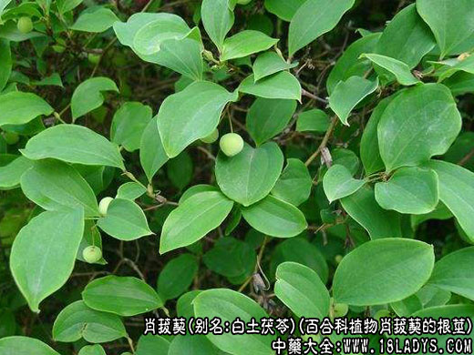
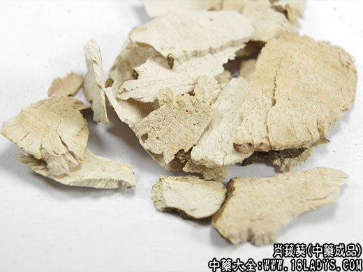
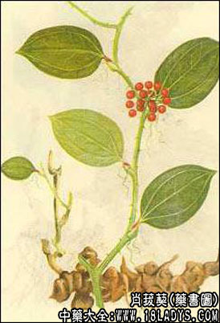

读音：肖菝[bá]葜[qiā]。
植物形态： 攀缘灌木。无毛，小枝有钝棱。叶互 生；叶柄下部1/3 ～ 1/4处有卷须和狭鞘；叶纸质，卵状 披针形或心形，先端渐尖或短渐尖，有短尖头，基部心形； 主脉5～7条，小脉网状。伞形花序生于叶腋，或生于褐色 的苞片内；总花梗扁，花序托球形；花梗纤细，雄花花被 筒长圆形或倒卵形，顶端有3枚钝齿，雄蕊3枚，长约为花 被的2/3，花药长为花丝的1/2 ；雌花花被筒卵形，具3枚 退化雄蕊，子房卵形，柱头3裂。浆果卵圆形。
生于山坡密林中或路边杂木林下。
产地：分布于陕西、甘肃、安徽、浙江、 江西、福建、湖南、广东、四川、云南等地。块茎（白土 茯苓）：春、秋二季采挖，除去芦茎，洗净，切片，晒干。
功效与作用： 味甘、淡，性平。清热利湿，解毒消 肿。
药理作用：主治小便淋涩、白浊、带下、痈肿疮毒。